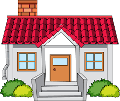

Jane follow the rabbit, she was still very affraid and wishing not going into this dagerous adventure. the rabbit stopped for a while and looked at her. for a second she felt that the rabbit knows what she is thinking and how affraid she was. it the continue and she also kept follwing him untill it reached some place familiar to her and yes it was her grandmother home. how happy she felt!
The END
